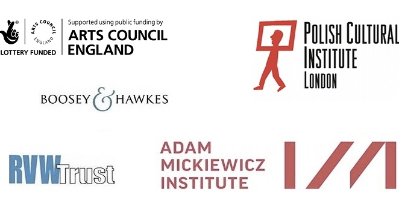

Register here to receive updates on the festival and information on special offers.
For all enquiries, please contact festival manager Sarah Biggs on sarahbiggs01[at]btinternet.com or 020 8348 5727.
The festival is grateful to the Arts Council England, Polish Cultural Institute, RVW Trust, John S Cohen Foundation and the Fidelio Charitable Trust for their support:
